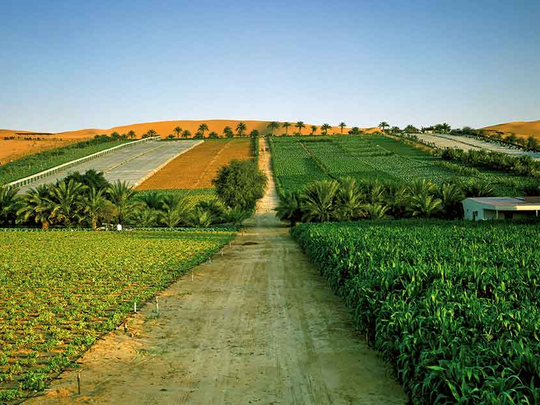

The Digdagga Agricultural Trials Station in Ra's al-Khaimah is central to all agricultural research and training efforts in the UAE. Abu Dhabi has two large wheat farms at Al 'Ayn, and experimental farms at Rawaya and Mazaid (near Al 'Ayn) are designed to encourage local Bedouins to take up settled farming. The Abu Dhabi Arid Land Research Center on Sadiyat Island produces vegetables through special irrigation and hydroponic techniques. In 1999, UAE agriculture produced 1,055,000 tons of vegetables and melons, and 358,000 tons of fruit. Produce includes citrus, mangos, tomatoes, celery, potatoes, cucumbers, lettuce, melons, peppers, and fodder crops.
| Fruits Produced | Apple | Mango |
| Strawbarry | Orange | WaterMelon |
| Banana | Dates | Pumpkine |
Most Produced fruits in the UAE